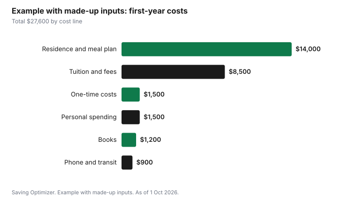

Kids · Canada
First-Year University Costs in Canada: A Budget for Parents and Students
First-year university in Canada costs more than tuition. A realistic budget adds the school's ancillary and student fees, residence and a meal plan or rent and groceries, books and course materials, transit, a phone plan, and one-time costs such as a residence deposit, bedding and a laptop. Use the school's own fee schedule for tuition and residence, because published averages do not match any one program. Then line up the money: RESP withdrawals, student aid, scholarships and the student's earnings, and remember the tuition credit.
Key takeaways
- Use the school's published fee schedule for your program, residence and meal plan. Averages do not fit any one student.
- Add the lines families forget: ancillary and student fees, a transit pass, phone, and one-time move-in costs.
- RESP: EAPs are capped at $8,000 in the first 13 consecutive weeks of full-time study; contributions can also be withdrawn.
- Apply for student aid even if you are unsure of eligibility. Provincial programs combine federal grants and loans.
- Example with made-up inputs: a $27,600 first year is funded by $12,000 of RESP, $6,000 of grants and scholarships, $5,000 of summer work and $4,600 from parents.
The lines in a first-year budget
| Line | Where to find it | Notes |
|---|---|---|
| Tuition | School's fee schedule for the program and year | Varies by program and province |
| Ancillary and student fees | Same schedule | Health plan, athletics, student union; some can be opted out of |
| Residence | Housing office | Room type changes the price |
| Meal plan or groceries | Housing office or your own grocery budget | Some residences require a plan |
| Books and materials | Course syllabus or bookstore | Used and digital copies can cost less |
| Transit | Student union or transit agency | Many schools include a U-Pass in fees |
| Phone and laptop | Your plan and device | Ask the program about laptop requirements |
| One-time costs | Housing office and your list | Deposit, bedding, kitchen basics, move-in travel |
Residence or off-campus
Residence bundles rent, furniture and often utilities and a meal plan, and it removes the search for a lease. Off-campus housing can cost less per month but adds a deposit, utilities, internet and groceries, and a 12-month lease when the school year is eight months. Compare the eight-month total, not the monthly rate. The residence grocery guide covers food when a meal plan is not required.
Funding: RESP, aid, scholarships and work
RESP withdrawals have two parts: educational assistance payments, taxable to the student, and contributions, tax-free. In the first 13 consecutive weeks of full-time study, EAPs are capped at $8,000. The RESP withdrawals guide covers the order.
Apply for student financial assistance through your province or territory, which assesses federal Canada Student Grants and Loans together with provincial aid. Eligibility depends on family income and costs, so apply even if you are unsure. Scholarships and bursaries from the school are often automatic on admission averages, with others requiring an application.
Tax credits that come back later
The school issues a T2202 for eligible tuition. The student uses it to reduce their own tax first, then can transfer up to $5,000 of the current year's federal amount, minus what they used, to a parent or grandparent. What is not used or transferred carries forward. Scholarship income for a full-time student is generally exempt. A student who files, even with little income, also builds RRSP room and can get the GST/HST credit once eligible.
Ways to cut the first-year bill
- Opt out of ancillary fees that allow it, such as a health plan if the student is covered on a parent's plan.
- Buy course materials after the first class, when the syllabus confirms what is required, and look for used or library copies.
- Use the student transit pass if fees include one, and leave the car at home. The student commuting guide has the math.
- Pick a phone plan before September. The cheaper cell plans guide explains plan types.
- Use student discounts and grocery programs. The student grocery discounts guide lists offer types.
Example with made-up inputs: one first-year budget
These numbers are an example with made-up inputs, not school fees. Tuition and fees $8,500, residence and meal plan $14,000, books $1,200, phone and transit $900, one-time costs $1,500 and personal spending $1,500 total $27,600. Funding: $12,000 from the RESP, $6,000 of grants and scholarships, $5,000 from summer work and $4,600 from parents.
| Cost line | Amount | Funding source | Amount |
|---|---|---|---|
| Tuition and fees | $8,500 | RESP | $12,000 |
| Residence and meal plan | $14,000 | Grants and scholarships | $6,000 |
| Books | $1,200 | Summer work | $5,000 |
| Phone and transit | $900 | Parents | $4,600 |
| One-time costs | $1,500 | ||
| Personal spending | $1,500 | ||
| Total | $27,600 | Total | $27,600 |

Sources
- CRA, Registered Education Savings Plans payments, as of 1 Oct 2026. EAP cap $8,000 in the first 13 consecutive weeks of full-time study.
- CRA, Line 32400 Tuition amount transferred from a child or grandchild, as of 1 Oct 2026. Up to $5,000 of the current year's federal amount.
- Canada.ca, Student financial assistance, as of 1 Oct 2026. Federal grants and loans applied for through the province or territory.
- Every cost and funding amount in the example table and chart is an example with made-up inputs.
Frequently asked questions
How much does first-year university cost in Canada?
It depends on the program, province and housing. Use the school's fee schedule for tuition, ancillary fees and residence, then add books, transit, phone and one-time move-in costs. Housing often costs more than tuition.
How much can I take out of an RESP in first year?
EAPs, the grant and growth portion, are capped at $8,000 in the first 13 consecutive weeks of full-time study. Contributions can also be withdrawn tax-free as needed.
Can parents claim their child's tuition?
A student can transfer up to $5,000 of the current year's federal tuition amount, minus what they used, to a parent or grandparent. The student designates the transfer on the T2202 and Schedule 11.
Is residence cheaper than off-campus housing?
Not always. Compare the eight-month residence total, including any required meal plan, with off-campus rent, deposit, utilities, internet, groceries and the length of the lease.
Should my student apply for student aid?
Yes, if there is any chance of eligibility. Provincial programs assess federal Canada Student Grants and Loans with provincial aid based on income and costs.
Researched and drafted with AI assistance and fact-checked against official Canadian sources. How we create content.
Disclosure: Student banking, phone plans and discounts are described as offer types; none is ranked. Saving Optimizer may earn a commission if a partner link is added later; no partnership is claimed. Education only.